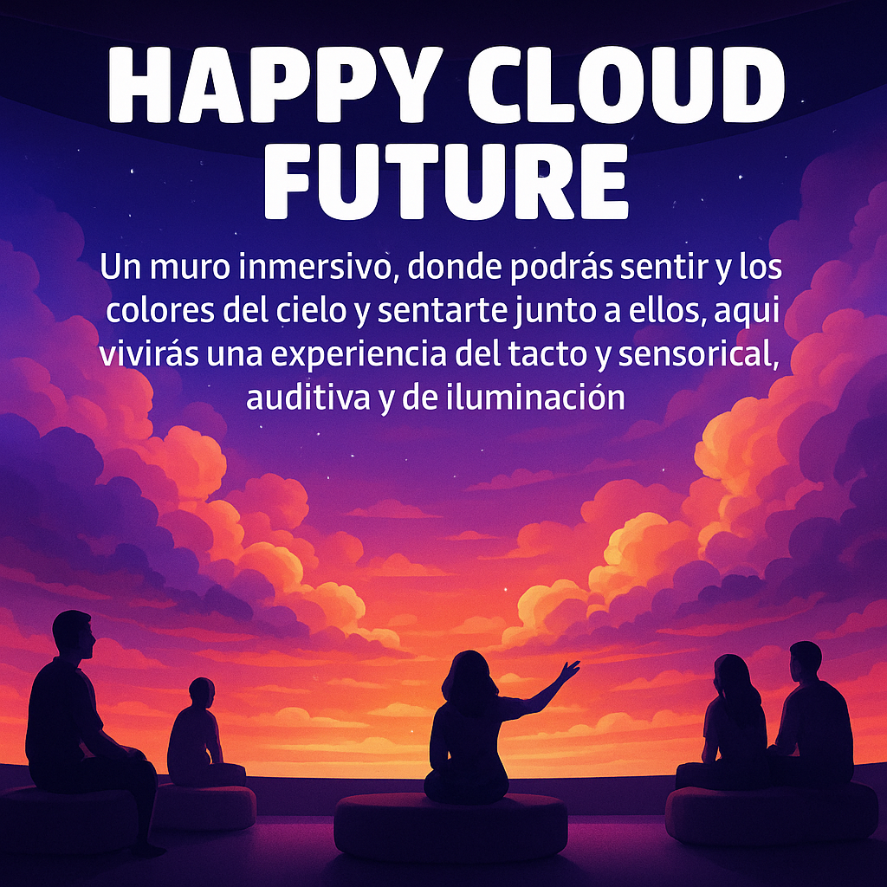
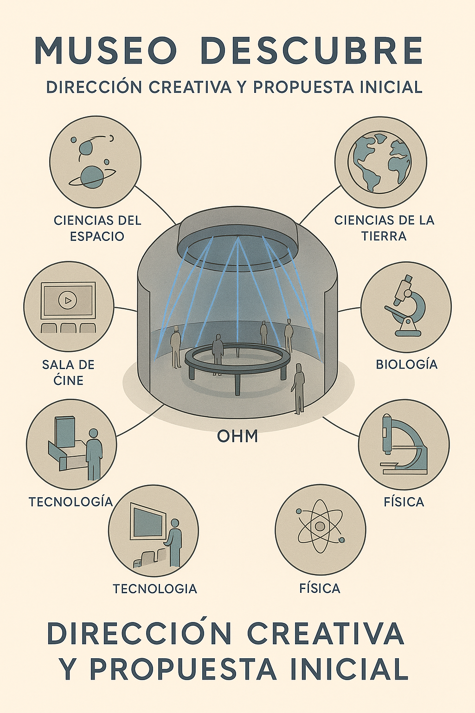
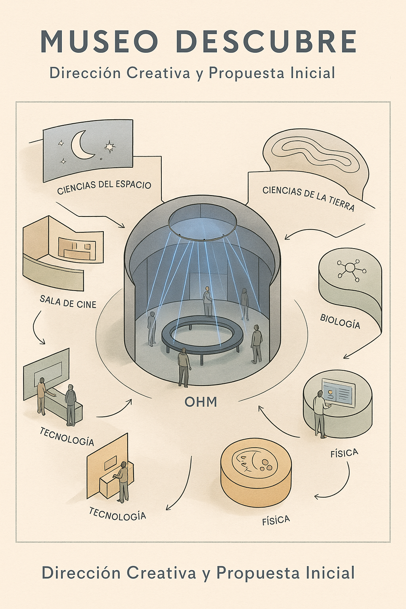
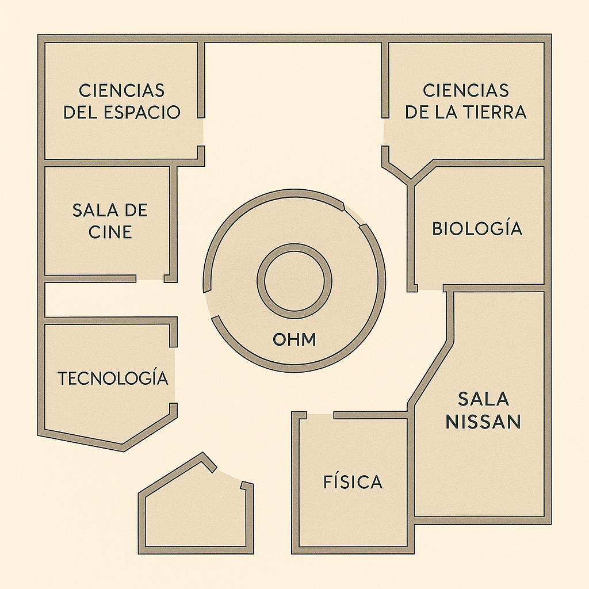
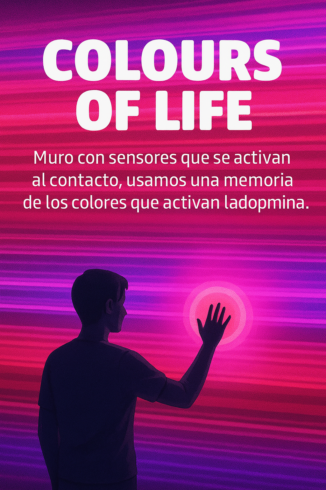
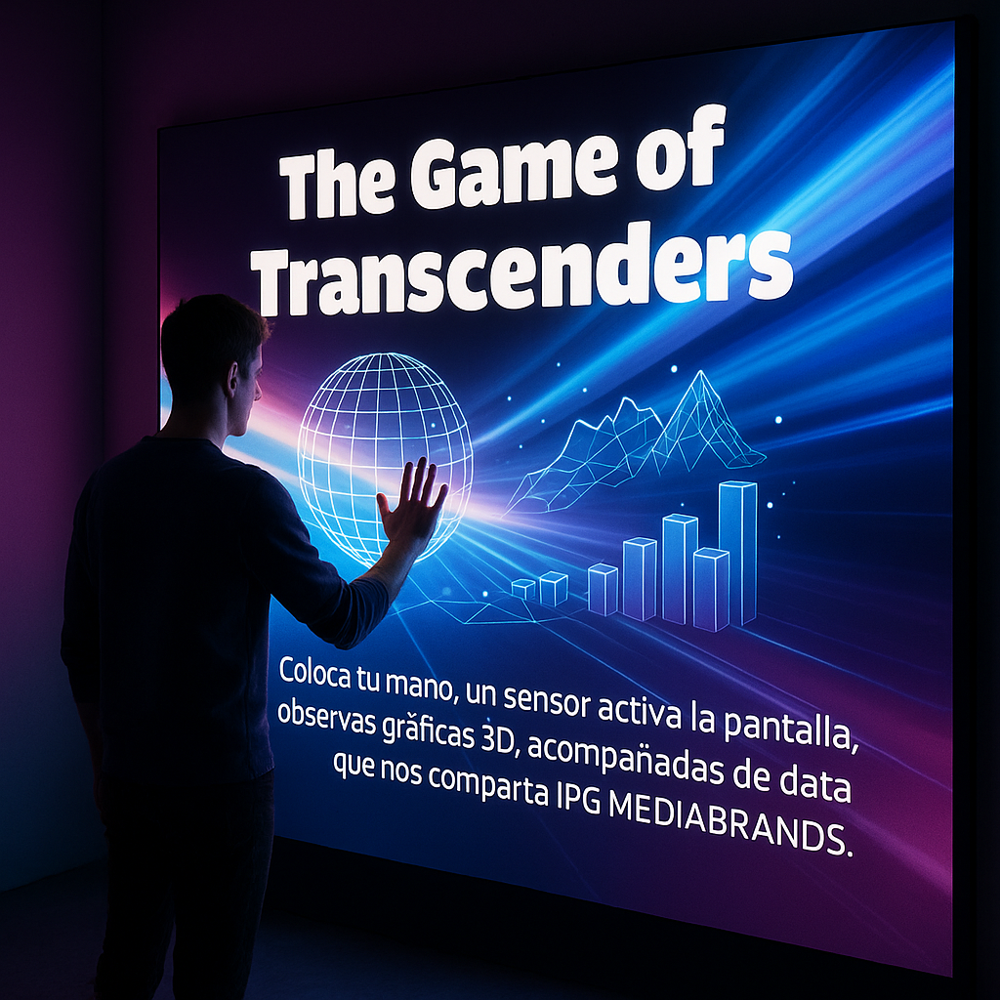
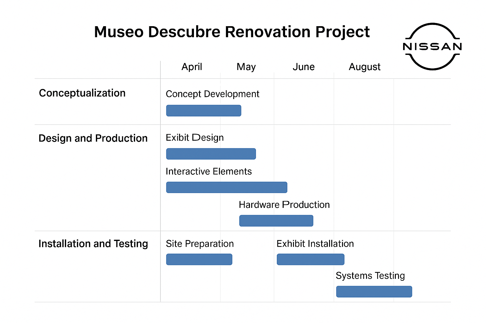

Happy Cloud Future
An immersive sky wall where you feel the colours of the sky — a sensory experience of touch, sound and light.
Creative direction and interactive systems for the renovation of the Museo Descubre science museum in Aguascalientes — themed zones, a central kinetic installation and sensor-driven walls that turn science into something you touch, move and feel.
We led the creative direction and project management for the renovation of Museo Descubre. The concept blends technology and education, reimagining the floor around a central kinetic installation — OHM — surrounded by themed science zones.
Each room pairs a scientific theme with a hands-on, sensor-driven experience. Visitors don't just read about a concept — they trigger it, shape it and play with it.





An immersive sky wall where you feel the colours of the sky — a sensory experience of touch, sound and light.

A sensor wall that reacts to touch, using colour memory to spark dopamine and emotion.

Place your hand, a sensor activates the screen, and 3D graphics appear alongside live data shared by IPG Mediabrands.
Concept development — defining the narrative, the zones and how each exhibit teaches through interaction.
Designing each room and interactive moment — from the OHM centerpiece to the sensor walls.
Building the interactive systems and producing the hardware — sensors, screens and custom electronics.
Preparing the space and installing exhibits on site, calibrated to the venue's geometry and lighting.
Stress-testing every system with real audiences and hardening it for continuous daily operation.



We design and build immersive, interactive experiences for museums, brands and cultural spaces.
Start a project →